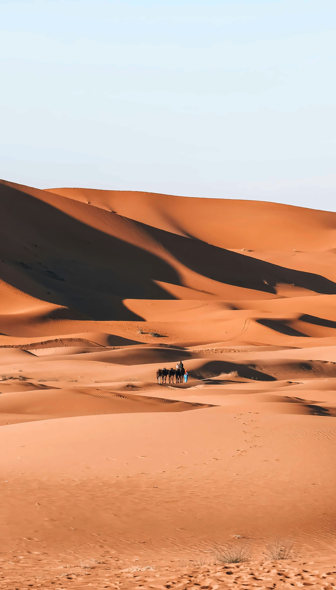

Distance, driving time, routes and the options that actually make sense
It is the question we answer most often on WhatsApp: how do you get from Marrakech to the Sahara dunes of Merzouga? Here is the honest answer.
Merzouga sits on the edge of the Erg Chebbi dunes in south-eastern Morocco, close to the Algerian border. From Marrakech, it is roughly 560 km by road, which means around 9 hours of pure driving, without stops. That is why almost nobody does it in one go, and why the journey itself, over the High Atlas and through the kasbah valleys, becomes part of the trip. Below we compare every way of getting there and explain the route we use with our own guests.
The classic road leaves Marrakech towards the Tizi n'Tichka pass, the highest paved pass in the High Atlas, then drops down to Aït Benhaddou and Ouarzazate. From there it follows the Road of a Thousand Kasbahs through Skoura, the Dades Valley and Tinghir, near the Todra Gorge, before crossing the stony desert to Erfoud, Rissani and finally Merzouga. A second route goes south through the Draa Valley and Zagora, then east through Tazarine and Alnif: it is wilder, quieter and perfect if you want to see palm groves and the desert landscapes of the south.

Long-distance buses do connect Marrakech with the south-east, but the journey is long, usually overnight or with a change, and it only takes you to the village. You still need to arrange a camp, the camel trek and transport into the dunes once you arrive. It is the cheapest option, but you see very little of the road and lose most of the comfort.
The road is paved all the way to Merzouga and driving yourself gives you freedom. The downsides: mountain bends on the Tichka pass, long empty stretches, and the fact that the dunes and camps are reached on sand tracks, so you still need a 4x4 transfer or a camel trek for the last part. Plan at least two days each way.
The nearest airport is Errachidia, around two hours by road from Merzouga, with limited domestic flights that usually go through Casablanca. It can save time on a very short trip, but you miss the High Atlas and the kasbah valleys, which for most travellers are half the magic.
This is how most of our guests travel, and it is the most relaxed option. Your driver-guide picks you up at your riad in Marrakech, the stops are planned so the driving is split over several days, and the camp, camel trek and dinner in the dunes are already arranged. You simply sit back and enjoy the landscapes.
Pro Tip: Avoid the very short Marrakech to Merzouga tours that try to do the whole trip in two or three days: you spend most of the time in the vehicle. Five days is the minimum we recommend to really enjoy the desert, and seven days lets you add Zagora, the Dades Valley and a guided day in Marrakech.
About 9 hours of driving for roughly 560 km, without stops. With photo stops and lunch, it becomes a full long day, which is why we always split it over at least two days.
No, it is not realistic: it would mean around 18 hours on the road. If you are short on time, a desert closer to Marrakech is a better day trip, but for the real Sahara dunes, plan several days.
Yes. It is a well-travelled paved road. The mountain section over the Tichka pass requires care, especially in winter, which is one reason many travellers prefer an experienced local driver.
Yes. Fes is actually a little closer to Merzouga than Marrakech, and we organise departures from Fes, Casablanca and Agadir too. Send us your arrival city and dates.
Whichever option you choose, the road from Marrakech to Merzouga is one of the most beautiful journeys in Morocco. If you would like us to plan it for you, send us your dates on WhatsApp or through the booking form on any tour page.
Ready to plan your own Morocco trip?
Contact Us